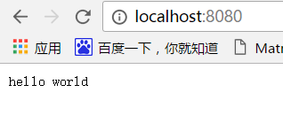

Go语言开发web应用真是可以用简单快速来形容。最近的项目一直在使用一个开源的框架beego来做，使用开源框架确实提高了开发速度，但是时间长了对go语言的原生的用法有些不熟，所以决定写几篇东西来简单介绍一下go语言web开发，自己也能对go语言原生的用法熟练一下。
先从最简单的开始
第一篇就先实现一个最简单的web服务，编程界流行从 hello world开始，好像确实有他的道理。
首先介绍一下go语言web开发常用的几个包：net、net\http，当然如果你需要做一些调试打印的话可能还需要log包或者fmt包。有兴趣的可以阅读以下go源码。
下面首先看代码
编译运行，然后打开浏览器，打开地址localhost:8080,可以看到在页面打印出hello world，如下：
代码很简单也很好理解，ListenAndServe函数是监听端口函数，这里设置的是8080端口，当访问该端口地址的时候就会解析路由，然后执行我们设置的路由函数hello，在页面打印hello world。
第一篇就写写到这。。。